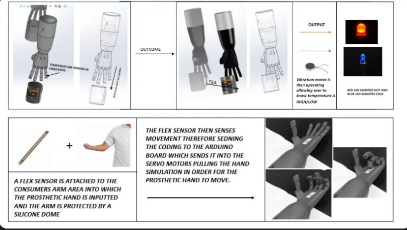
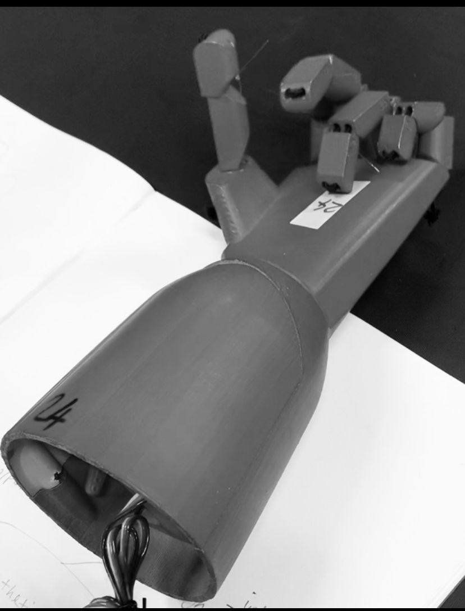
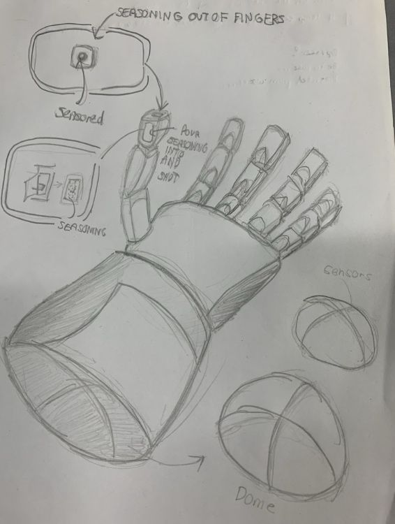
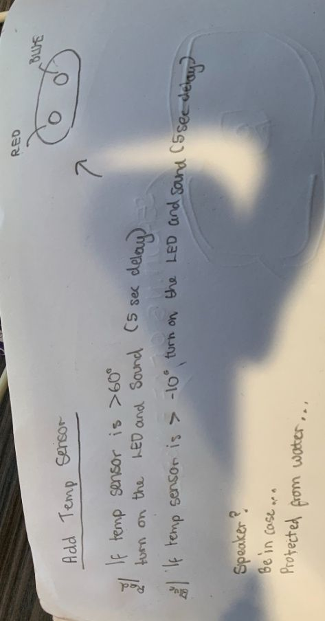
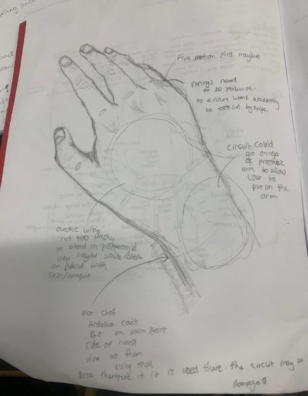
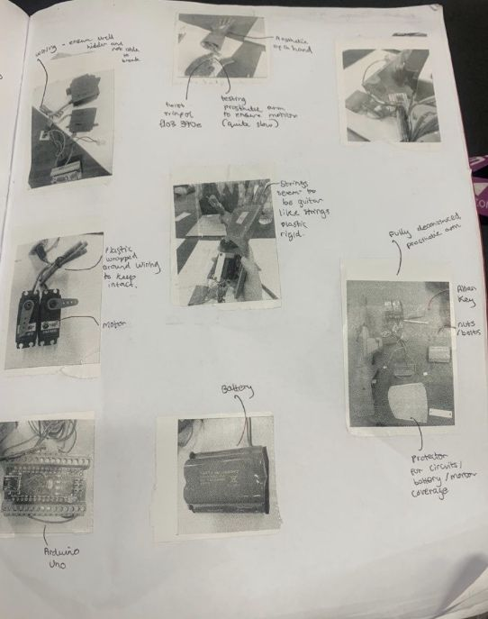
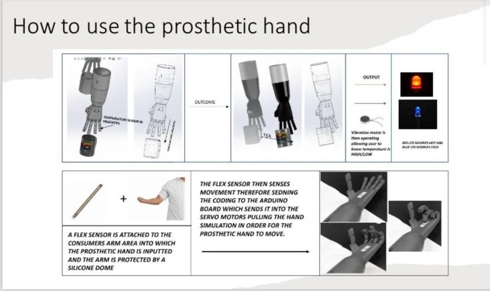
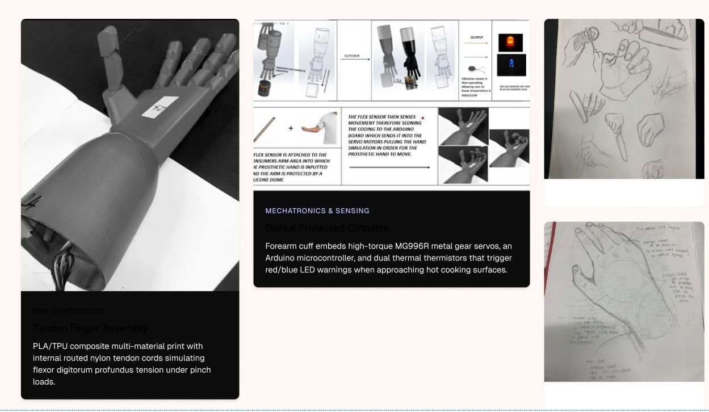

Prosthetic Hand
Designed around how a chef actually works

A prosthetic hand for use in a professional kitchen, built from a study of how a hand grips, holds and manipulates a knife.
A flex sensor reads movement in the user’s arm and an Arduino drives the servos. A fingertip temperature sensor warns red for hot and blue for cold before contact, and the circuit sits on the forearm rather than the palm that a chef works with.
- Year
- 2025
- Discipline
- Design engineering
- Role
- Form and concept analysis · Technical sketching · Electronics build
- Tools
- Arduino Uno · Flex sensor · Servo motors · Silicone dome










12 images · Design engineering · 2025